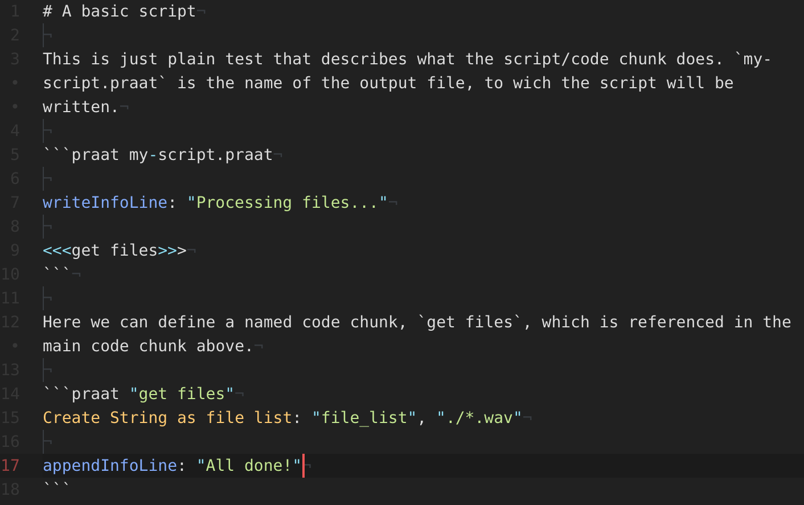
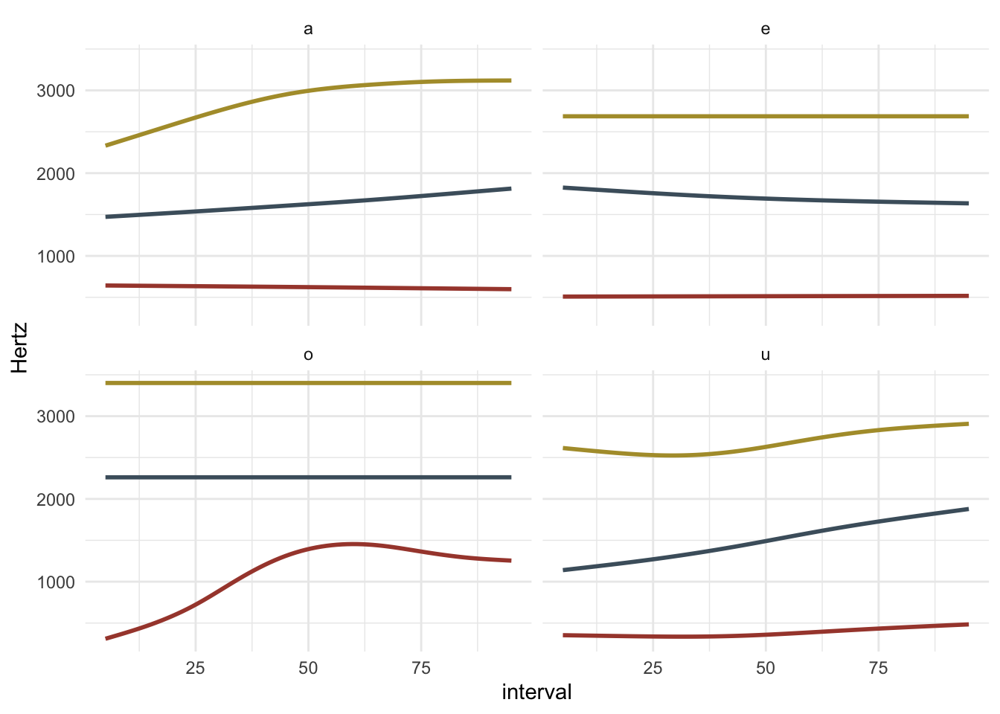

Stefano Coretta
Home
Research
Teaching
Meta
Output
Blog
Categories
All
(24)
Bayesian
(1)
Gist
(3)
Linear models
(7)
Linguistics
(9)
Meta-models
(2)
Methods
(10)
Quotables
(1)
Rstats
(1)
brms
(1)
methods
(1)
One Thousand and One names
Methods
Linear models
The following table lists common “portmanteau” names for linear models. Note that different traditions/disciplines might use one particular name more often than the others.
Jul 22, 2022
Stefano Coretta
Bayesian CrI-width power analysis
Linear models
Bayesian
brms
This post shows how to do a quick and dirty Bayesian power analysis.
Apr 5, 2022
Stefano Coretta
How to simplify your study design
Linear models
We have all been there.
Dec 1, 2021
R gist — Dot matrix charts with ggplot2
Gist
Nov 21, 2021
Stefano Coretta
Linear models: a cheat-sheet
methods
Linear models
Linear models
, aka linear regression models or regression models, are a group of statistical models based on the simple idea that we can predict an outcome variable
\(Y\)
based on a…
Aug 21, 2021
Stefano Coretta
Factors, coding and contrasts
Methods
Linear models
This post is an overview of how factors (i.e. categorical variables) are coded under the hood and which types of coding can be set in R.
1
Jul 20, 2021
Stefano Coretta
R gist — Plotting the area under the curve with ggplot
Methods
Jul 4, 2021
Stefano Coretta
My researcher’s positionality statement
Meta-models
This is my researcher’s
positionality statement
(for context, see Darwin Holmes 2020; Jafar 2018)
.
Apr 29, 2021
Stefano Coretta
On phonologisation
Linguistics
After the post on the definition of random effects, I thought about writing another one on the definition of
phonologisation
.
Apr 24, 2021
Stefano Coretta
R gist — VOT and place of articulation
Linguistics
Gist
Apr 22, 2021
Stefano Coretta
Methods as theory
Methods
Meta-models
At least in…
Mar 28, 2021
Stefano Coretta
On random effects
Methods
Linear models
Rstats
If you use
mixed-effects models
(aka multilevel models, hierarchical models), I am sure that at some point you asked yourself the following question at least once:
Should I include variable X as a fixed or as a…
Mar 15, 2021
Stefano Coretta
Quotables — Rebecca Posner
Quotables
This is part of the post series ‘Quotables: notable quotes from notable linguists’.
Mar 7, 2021
Stefano Coretta
R gist — Plot an interactive 3D RGB colour space
Gist
Jan 29, 2021
Stefano Coretta
How to globally set colour scales in ggplot2
Methods
After the post on using custom typefaces in ggplot2 (here), this time I’ll briefly discuss how to set colour scales in ggplot2 globally in an
.Rmd
file.
Dec 22, 2020
Stefano Coretta
How to use custom typefaces in ggplot2 [macOS only]
Methods
I keep hitting my head against this particular (and seemingly simple) task:
using custom typefaces in ggplot2 plots
and
being able to knit to PDF
.
Dec 21, 2020
Stefano Coretta
Plotting prior distributions with ggplot2
Methods
Linear models
The choice of priors is a fundamental step of the Bayesian inference process.
Vasishth et al. (2018)
recommend plotting the chosen priors to see if they are reasonable.
Jun 17, 2019
Stefano Coretta
An estimate of number of speakers per study in phonetics
Linguistics
Methods
A few weeks ago, I’ve asked on Twitter what people thought was the average number of participants used in phonetic studies. Here’s the tweet.
May 3, 2019
Stefano Coretta

Literate programming with Praat
Linguistics
Methods
Mar 21, 2019
Stefano Coretta
On the phonotactic restrictions of Proto-Indoeuropean roots
Linguistics
Proto-Indoeuropean lexicon is based on monosyllabic roots which have an alternating (ablaut) root vowel preceded and followed by consonants. In this post, I will share some…
Jan 6, 2019
Stefano Coretta
Plotting tongue contours with ggplot2
Linguistics
When plotting tongue contours data obtained from ultrasound tongue imaging in
R
using
ggplot2
, a common…
Aug 23, 2018
Stefano Coretta

Vowel formants trajectories and tidy data
Linguistics
With the advent of…
Mar 2, 2018
Stefano Coretta
Wikipedia and the “Dialects of Italy”
Linguistics
The
Italian Wikipedia
has reached a number of 1,215,574 articles, with 1,247,172 registered users (source: Italian Wikipedia Statistics). That’s more or less one user per article. The Italian encyclopaedia counts an…
Aug 4, 2015
Stefano Coretta
Short review of phonological databases
Linguistics
List of available phonological databases (updated 2019-03-22):
Jun 30, 2014
Stefano Coretta
No matching items